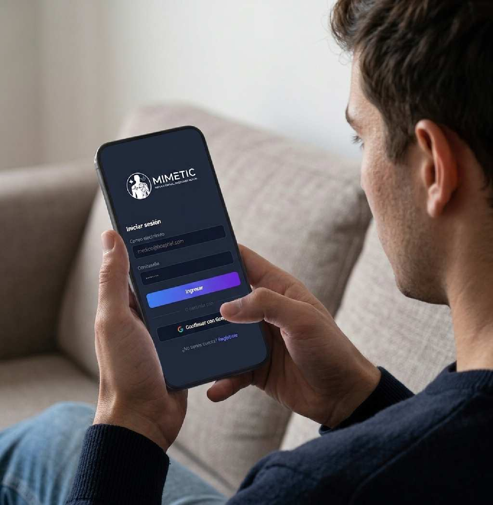

Gemelo digital en tiempo real
Mimetic
Replica Virtual Decisiones Reales
Gemelo Digital para la Gestión Inteligente del Flujo de Pacientes en Hospitales

¿Qué es Mimetic?
Solución tecnológica a la gestión de recursos hospitalarios y flujo de pacientes en tiempo real.
¿Quieres mas informacion sobre Mimetic?
Suscribete para recibir proximas actualizaciones e información
Te enviaremos nuevas actualizaciones a tu correo cuando mimetic tenga nuevas funcionalidades, mejoras y noticias sobre la fase beta de nuestro sistema de gemelo digital para hospitales.
Nota: Mimetic solo te enviara la informacion a tu correo registrado

CONOCE A NUESTRO EQUIPO

01 / 03